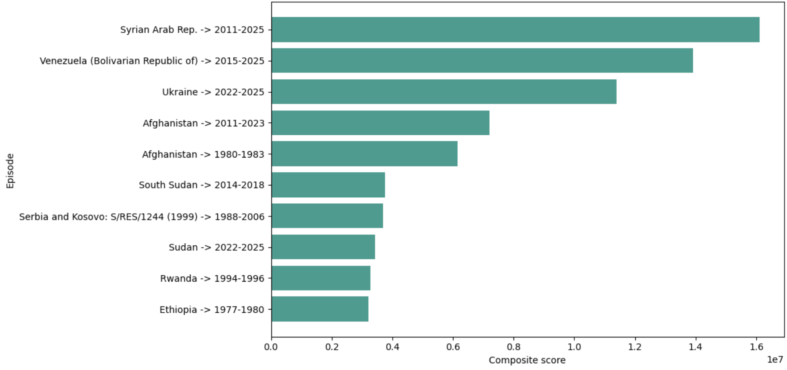
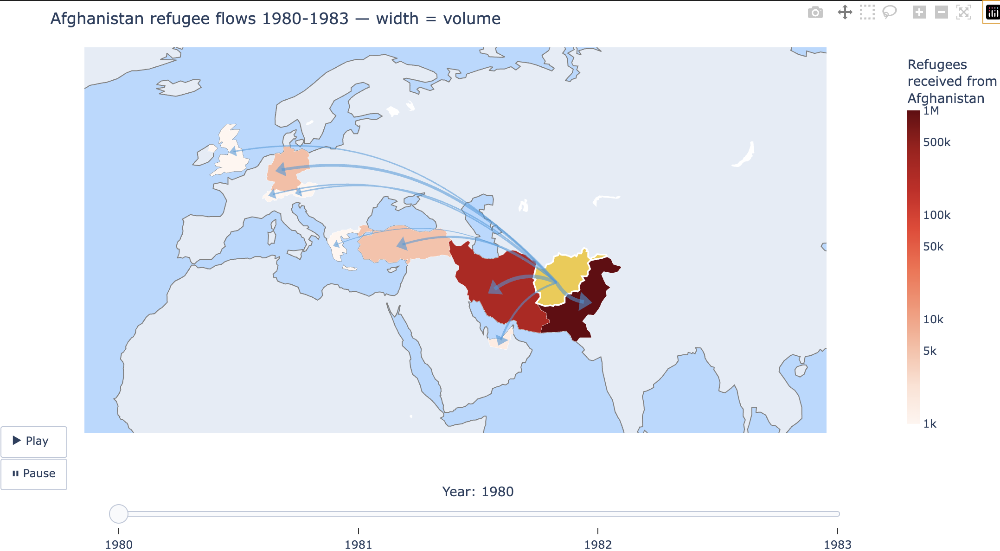
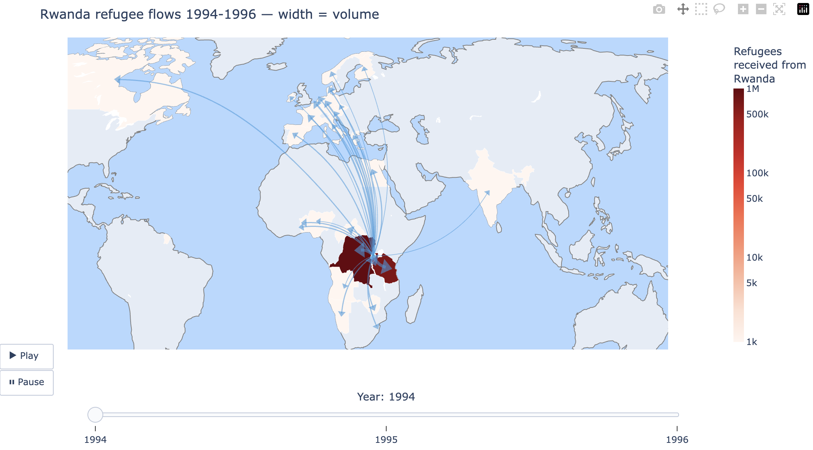
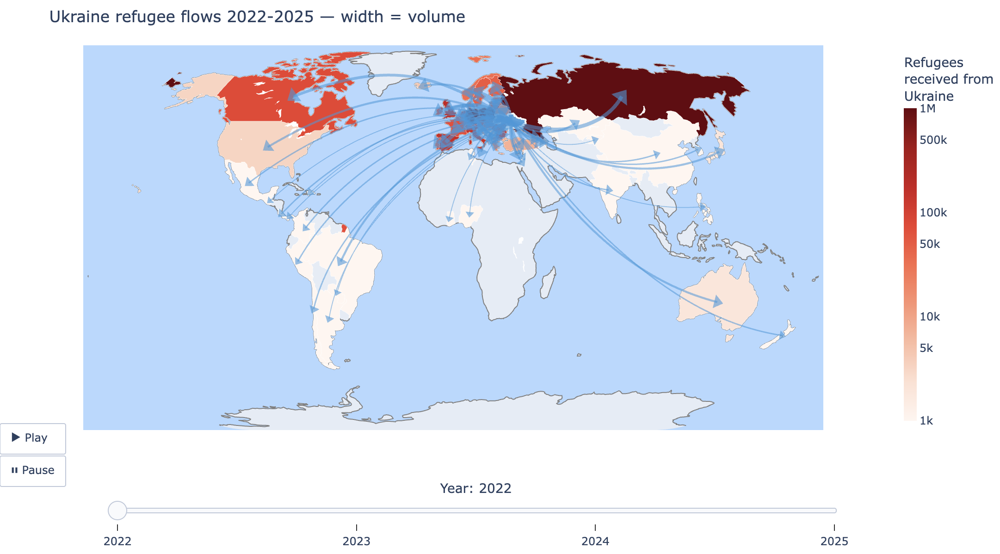

INTRODUCTION:
What is our story?
Our data shows global displacements between 1962 and 2025. Where do people go?
If they are forced out of their home country, how far do they go? what patterns can we find there and has it changed over time?
There are so many conflicts and so many displacements around the world... So for this analysis we'll pick 3 major events
and analyse & map out where people go.
A focus on distance and proximity.
OUR DATA: UNHCR data on displacements around the world, from 1962 to 2025
from 1962 to 2025, and where do they go?
OUR DATA:
pros:
- covers a long period of time (1962-2025)
- covers a large number of countries (origin and arrival)
- reilable source (UNHCR)
limitations:
- limited dats from 1960 to ...1980...real increase in data from 2000
- only tracks INTERNATIONAL movements... so it's not adequate for "natural disasters", or local population movements
- displacements are recorded per year: so we can-t look at the "immediate" impact of a crisis, but rather the "long-term" impact.
and we can't look at super short yet intense crisis.
- Keeping in mind the numbers we have are only the "officially" recorded displacements... there are probably many more.
- "unknown" or "stateless" displacements: missing data, change of country name/status, or a wish for anonymity for safety reasons?
VISUALS?: our favorite TOP 10 largest diplacements in recent History.
"Wow, that's a lot of displacements!"

A LOOK AT THE BIG PICTURE:
- let's map all displacements accross the years for a start. - Who moved? where? when?
VISUALS: all conflicts Map (AKA Oier's map) conclusions?
- the map clearly shows in dark red the main conflicts of recent History: Afganistan, Syria, Sudan, Rwanda, Venezuela, Myanmar, Ukraine etc.
- The map shows more and more displacements over time. most probably due to the inclease in data collection and reporting (vs: not because there are more displacements)
also because our data only shows international displacements so a portion of movements isn't taken into consideration.
- we invite the reader to explore the map and and use the timeline to get a better understanding of the evolution of displacements over time.
from our initial data anslysis and from this map, we decided to choose three conflicts to focus on.
we chose:
Afganistan 1980
Rwanda 1994-1996
Ukraine 2022
They take place in diffrerent decades, and so are good examples to look at the evolution of displacements over time.
conclusions?
- the map clearly shows in dark red the main conflicts of recent History: Afganistan, Syria, Sudan, Rwanda, Venezuela, Myanmar, Ukraine etc.
- The map shows more and more displacements over time. most probably due to the inclease in data collection and reporting (vs: not because there are more displacements)
also because our data only shows international displacements so a portion of movements isn't taken into consideration.
- we invite the reader to explore the map and and use the timeline to get a better understanding of the evolution of displacements over time.
from our initial data anslysis and from this map, we decided to choose three conflicts to focus on.
we chose:
Afganistan 1980
Rwanda 1994-1996
Ukraine 2022
They take place in diffrerent decades, and so are good examples to look at the evolution of displacements over time.
AFGHANISTAN 1980:
Short intro of the conflict:
1980: Soviet invasion of Afghanistan, leading to a long-lasting conflict and a large number of displacements.
Though the conflict spans from 1979 to 1989, we notice a spike in Asylum seekers in between 1980 and 1984, which is why we chose to focus on these years.
that year XXXXXXX million people fled the country to seek refuge in neighboring countries and beyond. Where did they go?

caption:
Flux of refugee and asylum seekers fleeing Afghanistan between 1980 and 1984.
conclusions:
- the Countries in red or dark red are neighbouring countries ex Pakistan and Iran, showing a larger number of displacements in the nearby area (up to 1.4, million moving to Iran in 1981)
- Turkie, Germany and India are marked in oragnge some years and recieved a significant number of displacements
- the rest is shown on the map as pale pink indicating that less than out of the XXXXX million that fled Afghanistan, 1000 or less people sought refuge in France, italy, Spain, US, UK etc.
we encourage the reader once more to explore the data for themselves and to use the timeline to see how the displacements evolved over time.
EXTRA GRAPHIC IDEA: visualizing the ration of people "recieved " VS total number that fled ?? like the line example Sune gave us at the beginning if the course.
Iran took in "this many" , while France took "this many"
OR a line graph showing distance travelled by refugees
Iran............: x -- x
Pakistan....: x --- x
France.......: x ----------------------------------------------------------------------------------------------------------------------------------- x
People travelled "this far" to seek refuge
RWANDA 1994-1996:
Short intro of the conflict:
The Rwandan genocide, also known as the Tutsi genocide, occurred from 7 April to 19 July 1994 during the Rwandan Civil War.
Over a span of around 100 days, members of the Tutsi ethnic group, as well as some moderate Hutu and Twa, were systematically killed by Hutu militias.
Rwandan Constitution states that over 1 million people were killed. The genocide was marked by extreme violence, with victims
often murdered by neighbours, and widespread sexual violence.

caption:
Flux of refugee and asylum seekers fleeing Rwanda between 1994 and 1996.
conclusions:
- the Countries in red or dark red are neighbouring countries ex Democratic Republic of Congo, Tanzania, and Burundi, showing a larger number of displacements in the nearby area (up to 1.3, million moving to Dem.Rep Congo in 1994)
- the rest is shown on the map as pale pink indicating that less than out of the XXXXX million that fled Rwanda 1000 or less people sought refuge in Angola, Canada, Eurpoe etc.
we encourage the reader once more to explore the data for themselves and to use the timeline to see how the displacements evolved over time.
SAME EXTRA GRAPHIC? showing distances traveled by refugees?
Iran : x --- x
Pakistan: x ----- x
Germany : x ------------------------------------------------------------------------------------------ x
People travelled "this far" to seek refuge
UKRAINE INVASION
Short intro of the conflict:
In 2022, Russia launched a full-scale invasion of Ukraine, leading to a humanitarian crisis and yet another large number of displacements.
The conflict has resulted in widespread destruction, loss of life, and millions forced to flee.
The invasion has been met with international condemnation. It still continues to this day.
Big bad guy Putin did bad things! and he invaded Ukraine in 2022...booooooo

caption:
Flux of refugee and asylum seekers fleeing Ukraine between 2022 and 2025. The conflict is still ongoing.
conclusions:
- the Countries in red or dark red are neighbouring countries ex Democratic Republic of Congo, Tanzania, and Burundi, showing a larger number of displacements in the nearby area (up to 1.3, million moving to Dem.Rep Congo in 1994)
- the rest is shown on the map as pale pink indicating that less than out of the XXXXX million that fled Rwanda 1000 or less people sought refuge in Angola, Canada, Eurpoe etc.
we encourage the reader once more to explore the data for themselves and to use the timeline to see how the displacements evolved over time.
SAME EXTRA GRAPHIC? showing distances traveled by refugees?
Iran : x --- x
Pakistan: x ----- x
Germany : x ------------------------------------------------------------------------------------------ x
People travelled "this far" to seek refuge
DISCUSSION/CONCLUSION:
So where do people go?
From our data it sure looks like proximity is a main factor. immediate neighbouring countries to a crisis are recurrently
tmapped out in red on our maps, showing that they receive a significant number of displacements.
A recurring pattern is also the attraction for Europe. further away, sometimes half way accross the planet
(ex from Rwanda), and yet people seek refuge in Europe, and in particular in Germany, France, UK, Spain etc.
(ex: Genmany recieved almost 5.5000 asylum seekers from Afganistan in 1980)
stricter rules and more difficult access??
OTHER NOTES:
POLITICAL REASONS: Which countries that are available to the refugees when conflict arises??
ex: Ukrainians had so much more options to flee to than Rwandans or Afghanis.
they were much more welcomed, than the other two groups.
OPENING TO FURTHER RESEARCH
In this article we focused refugees and asylum seekers movements and whether and whether their patterns evolved over time.
We also looked at whether proximity was a main factor in the choice of destination for refugees and asylum seekers.
to further this research and alanyse movements, we could have a look at there factors:
Does the economic situation of the destination country play a role? GDP?
Does language, culture and religious similarities play a role?
Does the political situation and the openness of the destination country play a role?